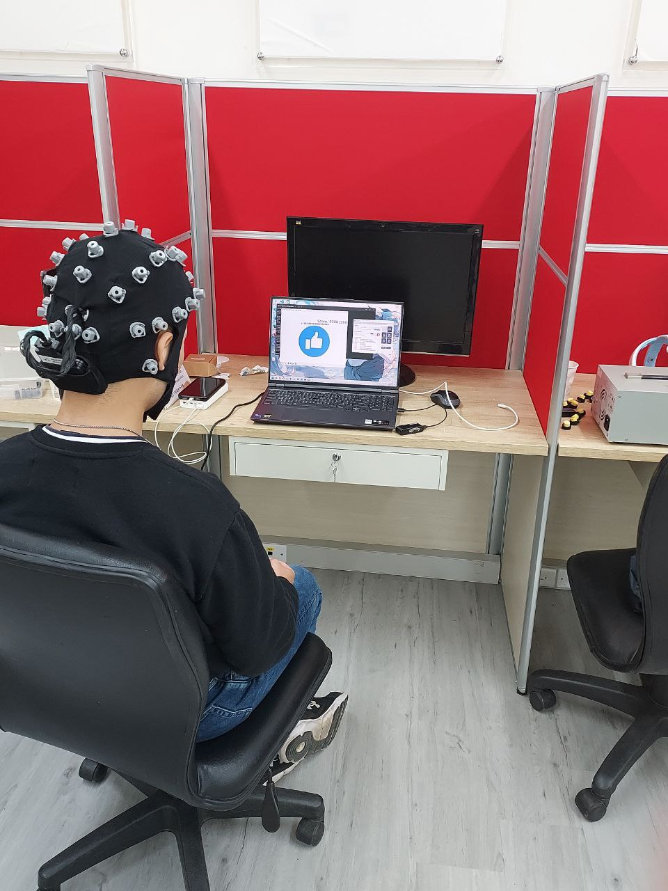
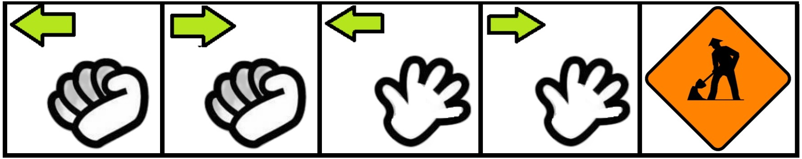
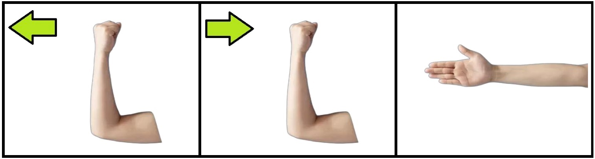

截止日期:2024-12-30
修改resting操作
利用亞提斯及NeuroScan做實驗，並比較差異
同樣利用Artise (32ch)進行實驗
利用Artise (32ch)進行實驗，在與柏翰學長學了Artise腦波帽的使用、安裝及清理後，以手臂的版本去進行實驗。

由於手部相對於手臂、腿部的版本，其動作更多，還要考慮後續方便加入動作，花了點時間。
也順便調整提示語音，稍微提高語速
手部版

由於前面做的改寫，基本上這裡很快就解決了。
改個圖片和把原本先伸直在彎曲(腿部)改成先彎曲在伸直(手臂)
手臂版

在製作完圖片後，與文楊討論，發現圖片好像不是很直覺，可能導致經常動錯手
因此透過google 翻譯的語音包，生成出三個動作的語音去輔助
demo影片
由於學長的版本在詳細檢視後，發現其在擴充性方面存在限制，考慮到未來手套可能需要頻繁新增動作或更換圖示，我花了一段時間進行改寫。在保留原有功能和演算法的基礎上，僅對程式架構進行調整，以提升其擴充性和維護性。
改寫後的
回答2.因為腳舉著十幾秒，很累!